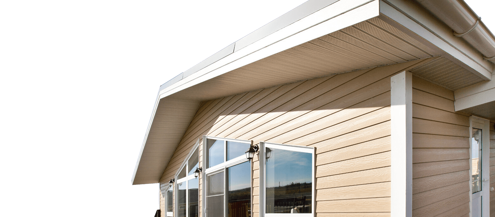
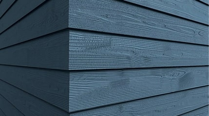
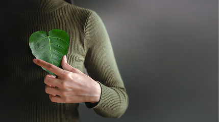
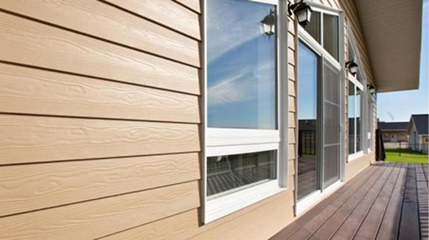
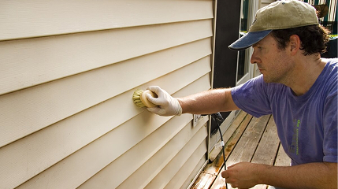
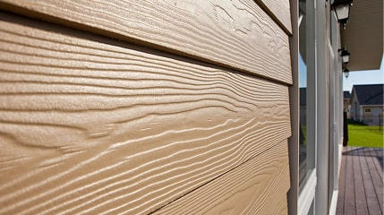
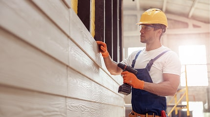
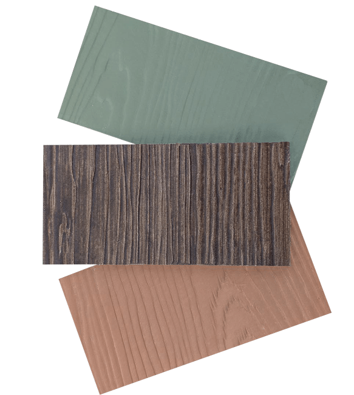

Екатеринбург, ул. Ленина, 28


Экологичный сайдинг без асбеста со сроком службы более 30 лет
Устойчив к механическим повреждениям и воздействию ультрофиолета
Пожаробезопасен и энергоэффективен
Монтаж за считанные дни

Каталог
Сайдинг Фаспан – безасбестовый фасадный фиброцементный сайдинг с высококачественным акрилатным финишным покрытием
Сайдинг Фаспан – безасбестовый фасадный фиброцементный сайдинг с высококачественным акрилатным финишным покрытием
Преимущества фиброцементного сайдинга
Фиброцемент устойчив к экстремальным погодным условиям: он не деформируется под воздействием влаги, не выгорает на солнце и не трескается при перепадах температур от -50°C до +80°C.

Материал изготавливается из натуральных компонентов, без асбеста и токсичных примесей. В отличие от ПВХ-сайдинга, который может выделять вредные вещества при нагреве, фиброцемент безопасен для здоровья и окружающей среды.

Цементная основа делает материал негорючим, что критически важно для защиты дома от возгораний. В отличие от винила, который плавится, или дерева, которое поддерживает огонь, фиброцементный сайдинг замедляет распространение пламени, повышая безопасность жилья.

Фиброцемент не требует ежегодной покраски или обработки антисептиками, как дерево. Достаточно периодически очищать его водой из шланга. Он устойчив к плесени, грибку и насекомым, что избавляет от дополнительных затрат времени и денег.

и натуральность
Фиброцемент идеально имитирует текстуру дерева, камня или кирпича, предлагая богатую палитру цветов и фактур. Виниловый сайдинг часто выглядит искусственно, а деревянный требует регулярной покраски. Фиброцемент же сохраняет первоначальный вид без сложного ухода, благодаря устойчивости к УФ-излучению и влаге

Плотная структура фиброцемента защищает от царапин, сколов и ударов, которые часто повреждают виниловые панели. Это особенно важно в регионах с частыми градами или сильными ветрами.

Заполните форму
и получите бесплатный образец фибросайдинга

Плюсы и минусы материалов для фасада
Срок службы — 50 лет и более. Устойчив к гниению, коррозии и насекомым.
Устойчив к влаге, огню, перепадам температур, ультрафиолету.
Имитирует натуральные материалы (дерево, камень), широкий выбор текстур и цветов
Средняя стоимость. Дороже винила, но дешевле дерева.
Легкий и простой в установке, но могут возникать сложности из-за веса сайдинга
Изготавливается из натуральных материалов (цемент, песок, целлюлоза), но требует энергии для производства.
Срок службы — 20–40 лет. Может выцветать и становиться хрупким со временем.
Устойчив к влаге, но может деформиро-ваться при высоких температурах.
Доступен в различных цветах, но выглядит менее натурально.
Самый бюджетный вариант.
Легкий и простой в установке, подходит для самостоятельного монтажа.
Изготавливается из ПВХ, который не подлежит биологическому разложению
Срок службы — 10–30 лет. Требует регулярного ухода (покраска, пропитка).
Восприимчива к влаге, огню, насекомым и грибкам.
Натуральный вид, но требует регулярного ухода для сохранения внешнего вида.
Высокая стоимость материала и дополнительных работ по уходу.
Требует навыков и времени для монтажа и обработки.
Натуральный материал, но требует обработки химическими составами.
Срок службы — 50 лет и более. Устойчив к коррозии, если покрыт защитным слоем.
Устойчив к огню, влаге и перепадам темп-р, но может деформироваться при ударах.
Ограниченный выбор текстур, выглядит менее натурально
Средняя стоимость, но может быть дороже в зависимости от типа металла.
Легкий в монтаже, но требует специального инструмента для резки.
Подлежит вторичной переработке, но производство энергоемко.
Фиброцементный сайдинг является одним из лучших материалов для обшивки благодаря своей долговечности, устойчивости к внешним воздействиям и эстетике. Он уступает виниловому сайдингу в простоте монтажа и стоимости, но превосходит его по большинству других параметров. Деревянная обшивка выглядит привлекательно, но требует значительного ухода, а металлический сайдинг, хотя и долговечен, менее эстетичен.